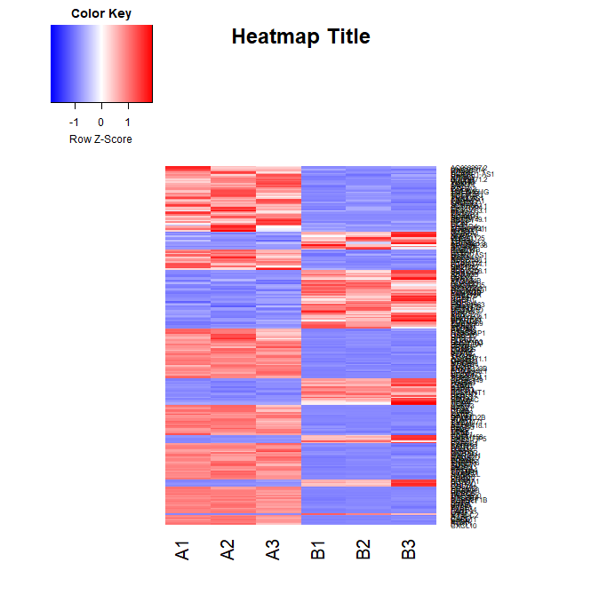

This tutorial is part of an introductory RNAseq workshop I gave to a graduate research department. It's aim is to provide enough information for someone who has never coded to successfully work in R to analyze their data.

Making Heatmaps in R
Jessica Mattick
R is a language
RStudio is a software that makes using R easier
Heatmap.2 is a function in an R package called gplots
Documentation for heatmap.2: https://www.rdocumentation.org/packages/gplots/versions/3.0.1/topics/heatmap.2
Great resource for learning R within R: http://swirlstats.com/students.html
Set up:
1. Download RStudio: https://www.rstudio.com/
2. Determine your working directory. This is where R will look for files and output files. To see current working directory , type the following command into the console (do not type the “ >”). This will output your path (example: Documents or Desktop):
>getwd()
Output:
[1] "C:/Users/Lab/Documents"
3. Change working directory if desired. You can either give a relative or absolute path to the location you want to work in. The following three examples will set a working directory in the same place. NOTE: The folder must exist prior to setting the working directory:
>setwd(“C:/Users/Lab/Documents/RNAseq”)
OR
>setwd(“RNAseq”)
OR
>setwd(“../Documents/RNAseq”)
4. Set up your workspace. You need to install the gplots package and set the requirements that will allow you to make a heatmap. You only need to do this step once per workspace. Type each line one by one and allow the command to finish before starting the next.
>install.packages("gplots", dependencies = TRUE)
>library(gplots)
5. Save your workspace so you don’t need to set up the workspace again. This step is not necessary but will save you time by not having to install gplots again the next time you open RStudio.
Making the heatmap:
1. Format your input file. Save your normalized count data in CSV format (Comma-separated values). The first column should be the gene identifiers and the first row should be the different conditions.
2. Input your countdata into R. If your input file is not saved in your working directory include the path to your file. In the below example countdata is a variable that you can name whatever you wish. After inputting your data, you can view your data by clicking on countdata in the “Environment” window in the top right of Rstudio or by typing view(countdata) in the console. Make sure your countdata looks correct after import.
>countdata = read.csv("input.csv", sep = ",", row.names = 1)
3. Create a matrix variable for your data. The variable x can be named anything.
> x <- as.matrix(countdata)
4. Create a color variable for your heatmap. You can use colorRampPalette to create a gradient between different colors. This example creates a blue, white, red gradient with red as the upregulated color.
> hmcols<-colorRampPalette(c("blue","white","red "))(256)
5. Use heatmap.2 to generate heatmap. There are many parameters that you can change for this function. I suggest reading the documentation. Depending on your matrix, you may need to adjust the margins for your heatmap. Here is an explanation of the parameters used in this example:
> heatmap.2(x, main = "Heatmap Title", density.info="none", trace="none", scale = "row", symbreaks = FALSE, margins =c(6,12), col=hmcols, dendrogram="row", Colv="NA")
x – the first parameter should be the name of the matrix variable, in this case x
main – sets the main title for your heatmap
density.info - character string indicating whether to superimpose a 'histogram', a 'density' plot, or no plot ('none') on the color-key.
trace - character string indicating whether a solid "trace" line should be drawn across 'row's or down 'column's, 'both' or 'none'. The distance of the line from the center of each color-cell is proportional to the size of the measurement. Defaults to 'column'.
scale - character indicating if the values should be centered and scaled in either the row direction or the column direction, or none. The default is "none"
symbreaks - Boolean indicating whether breaks should be made symmetric about 0. Defaults to TRUE if the data includes negative values, and to FALSE otherwise
margins - numeric vector of length 2 containing the margins
col - colors used for the image. Defaults to heat colors (heat.colors).
dendrogram - character string indicating whether to draw 'none', 'row', 'column' or 'both' dendrograms. Defaults to 'both'. However, if Rowv (or Colv) is FALSE or NULL and dendrogram is 'both', then a warning is issued and Rowv (or Colv) arguments are honoured.
Colv - determines if and how the column dendrogram should be reordered. Has the options as the Rowv argument above and additionally when x is a square matrix, Colv="Rowv" means that columns should be treated identically to the rows.
6. View the heatmap in the “Plots” tab in the bottom right window of RStudio. You resize the heatmap in this window and export it as an image or pdf.